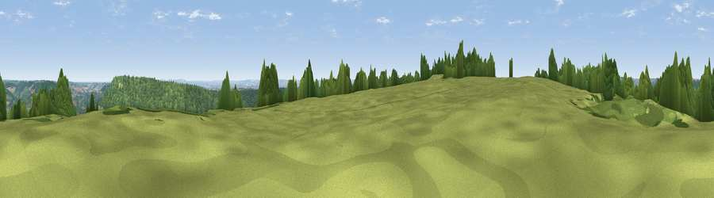

Viewpoint near Bathampton
#14564 in England · top 22% of its area beats it · near BathamptonWhere it is
The exact computed spot (ST 77725 65225). Click the marker for map links.
The view, rendered

A 360° render of this exact spot computed from the terrain model, tree cover and land cover — summer colours, afternoon light, calibrated against photographs of famous viewpoints. Real trees, hedges and buildings will differ in detail.
The panorama
Grey silhouette: terrain skyline in each direction (720 bearings, Earth curvature and refraction included). Dashed green: skyline with trees (+15 m) and buildings (+8 m) as obstacles. Blue strip: how far the ground is visible on each bearing.
Where the view opens
Wedge length = distance to the farthest visible ground on that bearing (vegetation-aware). Rings at 10, 25 and 50 km.
What fills the view
50% woodland · 43% grassland · 4% cropland · 2% built-up
Angular shares of the visible panorama (visual magnitude), not map area. Landscape diversity 0.40 (0–1 Shannon).
Key numbers
More beautiful places nearby
The staircase of upgrades: each row has a higher view potential than everything closer. Driving times are estimates from straight-line distance, calibrated against real road routing — check an actual route before setting out.
| Place | Direction | Drive | Score |
|---|---|---|---|
| Viewpoint near Bathford | ENE · 2 km | ~5 min | 64.0 |
| Viewpoint near Combe Hay | SW · 7 km | ~14 min | 66.1 |
| Viewpoint near Kelston | WNW · 7 km | ~15 min | 74.2 |
| Viewpoint near North Stoke | WNW · 8 km | ~16 min | 75.4 |
| Hanging Hill | NW · 8 km | ~16 min | 76.4 |
| Cley Hill | SSE · 21 km | ~36 min | 76.8 |
| Beacon Batch | WSW · 30 km | ~47 min | 79.4 |
| Viewpoint near Stinchcombe | N · 33 km | ~51 min | 80.5 |
51.38563, -2.32148 · source: screening · position refined by local search. Computed location — check access rights before visiting.